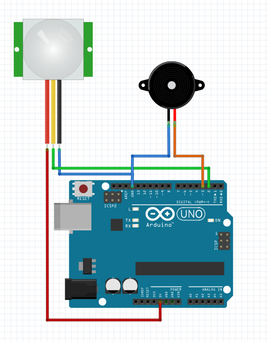

Alarms are very common nowadays, a lot of people have alarms in the whole house. But what if you want your internal alarm? For example, you may want to stop your siblings from entering your room, this project will help you build a simple PIR motion sensor using the Arduino Uno board.
This project won’t have any type of switch to turn it off so the only way to stop it is to get out of the room where it is installed or turn down the power. This project will also provide a glimpse of how the tone function works.
Parts needed
- 1 x Arduino Uno Board
- 1 x PIR sensor
- 1 x Buzzer
What is a PIR sensor?
A passive infrared sensor (PIR sensor) is an electronic sensor that measures infrared (IR) light radiating from objects in its field of view.
PIR sensor project with Arduino
First thing we have to do, before uploading the program is getting the connections ready. You will need 5 Jumper wires to connect everything, all of these wires should have male-female connectors.
Now it’s time to upload the program to Arduino. In the comments, you can find explanation of the whole code. I set the frequency to 3000 Hz because I found on the internet that most alarms use this frequency. The PIR sensor is basically movement sensor so whenever it detects movements, it sets OUT to HIGH, you can control the time of this HIGH state and the sensitivity of your sensor with the 2 potentiometers shown on the image below.
This project creates beep sounds (work similar to blink but with buzzer instead of an LED) when movements are detected. You can easily change the time of the beep by changing the delay time at the end of for loop.
The Code
bool isToneOn = false;
int frequency = 3000;
void setup() {
//here is our PIR sensor
pinMode(2, INPUT);
//here is our buzzer
pinMode(3, OUTPUT);
}
void loop() {
//when PIR sensor gives us HIGH it means that it detects movement
if(digitalRead(2) == HIGH){
//we will turn on alarm for 15 seconds
//we are using tone() so we can control frequency of our beep sound
//to turn tone off we have to use noTone()
//if you want to change frequency of tone you can do it in the variable
//on the top of the code
for(int a = 0; a < 30; a++){
if(isToneOn){
noTone(3);
isToneOn = false;
}else{
//3 means our pin where buzzer is connected
tone(3, frequency);
//we have to change this variable to true, we have to know
//when to turn buzzer on and when to turn it on
isToneOn = true;
}
//delay 0.5 second, you can change this value so it will
//beep slower or faster
delay(500);
}
}
}